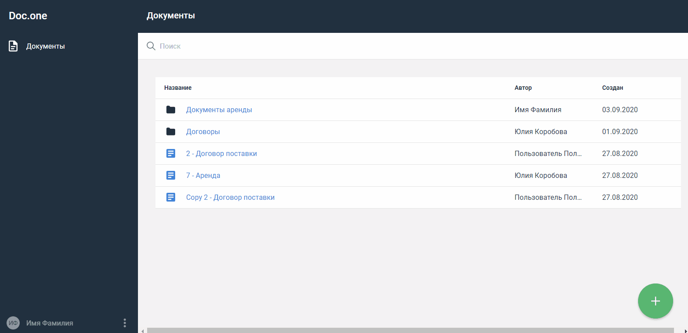
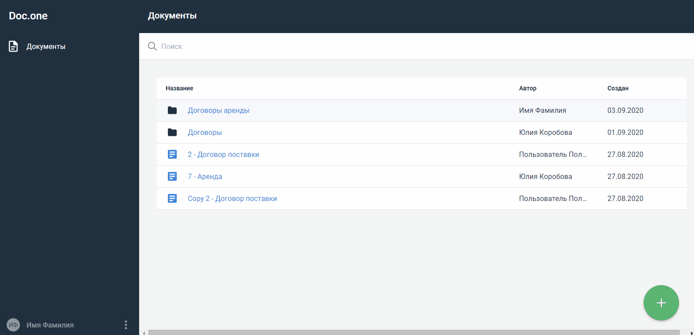

Папки документов¶
Создать папку¶
Нажмите кнопку в правом нижнем углу страницы и выберите пункт Папка.
Ваша папка появилась в списке документов. Введите имя новой папки. Оно сохранится автоматически.
Изменить название папки¶
Выберите папку, название которой нужно изменить, и наведите на нее курсор.
Нажмите кнопку ⋮ справа.
Выберите пункт Переименовать.
Название папки будет выделено цветом. Введите новое название и нажмите вне строки.

Название сохранится автоматически.
Удалить папку¶
Выберите папку, которую нужно удалить, и наведите на нее курсор.
Нажмите кнопку ⋮ справа.
Выберите пункт Удалить.
Подтвердите действие.
